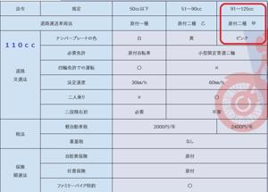
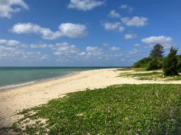
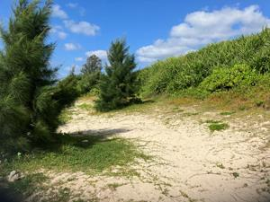
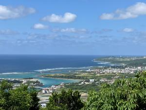
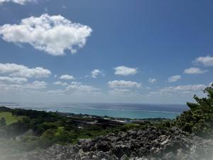
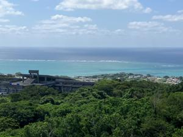

うるがいの話 ある日
最新: １２５ｃｃ以下通行禁止【うるがいの話 ある日】とは 一日だけのプログです
『うるがいの話』の最新一日だけのプログで、通信料が少なく経済的だ。カニの画像をクリックすると全ての日付が載る『うるがいの話』サイトを表示します
|
|
【うるがいの話】 うるがい(ｳﾙｶﾞｲ urugai)とは、『もずくがに』の名前でとても大きくなります。 |
|---|---|
|
|
【カミマヤーの話】 猫のことを方言でマヤーといいます。カミマヤー（kamimayaa）とは、神の猫のことです。 |
|
【たながぁの音楽】 たながぁ（ﾀﾅｶﾞｰ tanagaa）とは手長えびのことで、何種類かあり大きいのは車 エビぐらいになります。 |

|
【ぶながぁの話】 ぶながぁ(ﾌﾞﾅｶﾞｰ bunagaa)とは、赤い髪の毛、赤い身体、そして身長は１ｍ２０ｃｍ ぐらい、川の蟹を食べているの目撃された。場所は沖縄県国頭郡大宜味村のと ある村僕の隣近所に住んでいる爺さんから、聞いた話です。 |
|
|
【ギーマの話】 ギーマ(giima)とは、山原の里山に咲くスズランに似た、 花を付けます。実は食べられます、 気が付くと口の周りが紫になっています。 |
2023年05月27日 (土）１２５ｃｃ以下通行禁止
15:25

玉城(たまぐすく)グスクを出るとき時計は１０時、海を左に眺めながら泊魚市
へいくべと、家に直帰せず寄り道をすることにした。そうだ、那覇空港の那覇
うみそらトンネルを通るかと、トンネルに入る直前で信号待ちをしているとき
『１２５ｃｃ以下通行禁止』とある！、そうかダメなのかとあっさりと諦める
。そして、今日私のバイクの排気量を確認した『１１０ｃｃ』である。
ヤハラヅカサがある浜
モクマオウとアダンがある浜（百名ビーチ）
玉城跡から奥武島(おうじま)を眺める
玉城跡から久高島（左端）を眺める
玉城跡からみーばるビーチ（新原ビーチ）方面を眺める
１５時１４分 ビットコインの総資産 ￥１０、８８７（↑２１２）